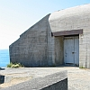

L'OTCHUPATION
|
Ch'tet a la fin d'Juin par un vendredi, Le samedi et l'dimanche y'eu d's'alarmes Y fut ramassé et porté à Moussie l'Bailli, Y fut bein du d'aver a decidé, L'Arlevée même l'enemi arrivi Lé prechain sé sus la gazette appathi Donc pour chinq ans notre p'tit Jerri Y resti bein des cliosés d'patates, Pas d'cliosés d'tomates coume autrement Nos rations devnaient pus et pus maigres De temps en temps y'avait d'l'extra: Notre pain t'chiquefais mêslé d'aveine, Même le paisson tet bein écart, Des chents persounnes allaient au lanchon Des ordres signés par Gussek et Schumaker, Nos bouais et bouaizies futent abbatus, De nos belles fermes y'en eu d'ruinés, Nos gazettes t'est plyienes de menties Pour travaillyi sus forts et fortifications, Nos radios futent confis't'chis, Y'a ti des nouvelles a matin? L'Italie d'mende une Armistice, Y'en avait qu'oubliaient qui t'est Jerriais Les nouvelles de pus en pus nos rejouissais: Les Alliés allaient d'success en success: Mais fallu equot passer le pus du hivé, Le pain vint presque a nos mant'chi, Les Allemands betot lus rendaient partout: N'ou n'viyet pus le vert du Nazi,
JACQUES LE ROTCHI. |
|  |  |
 |
 |
Vèrsion modèrnîsée:
L'OtchupâtionJuilet 1,1940 à Mai 8, 1945.Ou Jèrri souos les vèrtes crabes.
Ch'tait à la fîn d'Juîn par un Vendrédi,
Lé Sanm'di et l'Dînmanche y'eut d's alarmes
I' fut ramâssé et porté à Moussieu l'Bailli,
I' fut bein dû d'aver à décider,
L'arlévée même l'enn'mîn arrivit
Lé préchain sé sus la gâzette appathit
Don pour chînq ans notre p'tit Jèrri
I' restit bein des cliôsées d'patates,
Pas d'cliôsées d'tonmates comme autrément
Nos râtions dév'naient pus et pus maigres
Dé temps en temps y'avait d'l'extra:
Notre pain tchiquefais mêlé d'avaine,
Même lé paîsson 'tait bein êcars,
Des chents pèrsonnes allaient au lanchon
Des ordres sinnés par Gussek et Schumacher,
Nos bouais et bouaîs'sies fûtent abattus,
Dé nos belles fèrmes y'en eut d'ruinnées,
Nos gâzettes 'tait plieinnes dé menneties
Pouor travailli sus forts et fortificâtions,
Nos radios fûtent confistchis,
"Y'a-t-i' des nouvelles à matîn?"
L'Italie d'mande eune Armistice,
Y'en avaient tch'oubliaient qu'i' 'taient Jèrriais
Les nouvelles dé pus en pus nos rêjouissaient:
Les Alliés allaient d'succès en succès:
Mais fallut acouo pâsser l'pus dû Hivé,
Le pain vînt presque à nos mantchi,
Les Allemands bétôt lus rendaient partout:
Nou n'viyait pus lé vèrt du Nazi,
|
Viyiz étout: